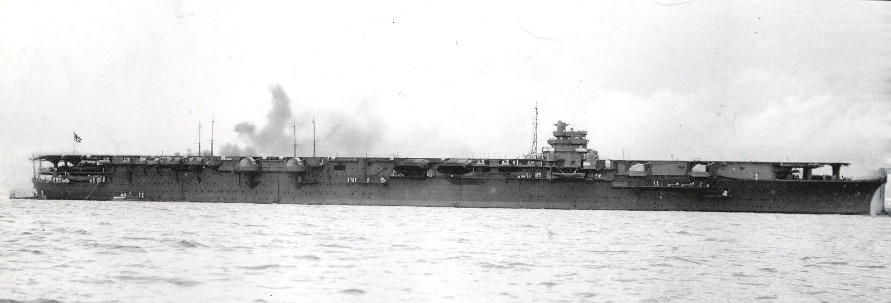

Why were the Shokaku class aircraft carriers the most successful carriers designed by the Imperial Japanese Navy
Published on October 26th, 2024
The Shokaku class aircraft carriers were a pivotal class of naval vessels in the Imperial Japanese Navy during World War II. Launched in the late 1930s, the Shokaku and her sister ship, Zuikaku, were designed for fast, offensive operations, emphasizing air power in naval engagements. With a displacement of around 30,000 tons, they featured advanced flight decks capable of launching and recovering aircraft efficiently. The Shokaku class played significant roles in key battles, including the attack on Pearl Harbor and the Battle of the Coral Sea. They were known for their formidable air groups, which included a mix of fighters, bombers, and torpedo planes, allowing them to project power over vast distances. Despite their initial successes, both carriers were eventually sunk during the war, marking the decline of Japan’s naval dominance. The Shokaku class remains a symbol of naval aviation innovation and the shifting tactics of maritime warfare during the era.
The Shokaku class aircraft carriers, comprising the Shokaku and Zuikaku, were among the most successful carriers designed by the Imperial Japanese Navy for several key reasons. These factors combined made the Shokaku class not only formidable during their operational period but also influential in the evolution of aircraft carrier design and naval warfare.
Operational History
The Shokaku class aircraft carriers had a significant operational history during World War II. Here are some key points highlighting their contributions and major engagements:
- Initial Operations and Pearl Harbor: Both carriers played crucial roles in the surprise attack on Pearl Harbor on December 7, 1941, launching aircraft that targeted the U.S. Pacific Fleet.
- Early Successes: The *Shokaku* participated in the Battle of the Coral Sea and was heavily damaged during the Battle of Midway, marking a strategic turning point in the Pacific War.
- Subsequent Engagements: After repairs, both carriers participated in various operations, including raids on Allied positions.
- Final Battles: The *Shokaku* was severely damaged and sunk during the Battle of Leyte Gulf in October 1944.
- Legacy: The operational history of the Shokaku class highlights the evolution of carrier warfare and their impact on naval strategies globally.
Key Factors for Success
- Superior Design and Capabilities: Designed with advanced features, including a larger flight deck and improved handling systems.
- Powerful Air Groups: Capable of carrying up to 72 aircraft, allowing for effective air power projection.
- Operational Flexibility: High-speed operations enabled quick engagements and retreats.
- Strategic Impact: Critical roles in major operations, contributing to initial Japanese Navy successes.
- Experienced Crews: Highly trained aircrew and support staff contributed to combat effectiveness.
- Innovation in Naval Warfare: Emphasized air superiority and influenced future naval strategies.